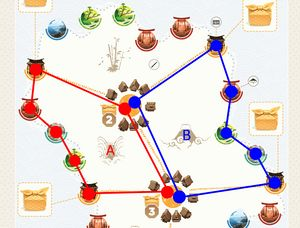

Tokaidoduo
Board Game Arena 官方规则文档
Overview
Six travellers explore the island of Tokaido: a Pilgrim seeking enlightenment, a Merchant seeking profit, and an Artist seeking inspiration — one of each per player. Each round, three dice are drafted between the two players, one per character type. Whichever die you take, you must move the matching character that many spaces.
The game ends at the end of the round when one of four race conditions is triggered and then both players total all their character scores.
- a full Temple track
- a full Garden track
- a 6th gold slab
- the last Painting tile (of a single player) being gifted
Turn Structure
Each round is a 1-2-1 die draft:
- Player A rolls all 3 dice, chooses one, and moves the matching character.
- Player B chooses one of the 2 remaining dice and moves the matching character.
- Player A uses the last die and moves the matching character.
A new round then begins with Player B drafting first; the first picker role alternates every round.
- The chosen character must move the exact number of spaces shown on the die.
- Using the arrival space's effect, in some cases this is optional (for example selling wares)
The Pilgrim
The Pilgrim travels clockwise around the island's outer ring of 37 spaces.
- May pass through stations occupied by another meeple.
- If the intended final space is occupied by any other meeple, the pilgrim jumps to the next space.
| Station | Effect |
|---|---|
| Coastal Town | Gain coins value (2, 3, or 4) based on the boutique token linked to that space. These coins
go into the same personal supply the Merchant uses for gold slabs. |
| Temple | Advance your Temple track one slot. Reaching slot 9 ends the game. |
| Garden | Advance your Garden track one slot. Reaching slot 6 ends the game. |
| Hot Spring | Take the Hot Spring token (from the board, or from your opponent if they hold it). It cannot be used the same turn it's gained. |
| Seashore | Take any one Wave tile from the board (or from your opponent if the board has none) and place it on the associated character board.
If you already hold all the wave tiles nothing occurs. |
Hot Spring token: After any future die pick, you may spend the token to immediately repeat your last chosen die value — move that same character the same number of spaces again (no reroll) and use its effect. The token returns to the board once it has been used. If your opponent lands on Hot Spring while you're holding it, they take it from you immediately.
The Merchant
The Merchant travels along the orange Trade routes connecting 4 Mountain towns and 8 Coastal towns, crossing a number of routes equal to the die value.
- If no path of exactly that length exists, the Merchant does not move and takes no action.
- When several destinations are reachable at the exact die value, you choose which to visit.
- You cannot enter a coastal town occupied by another meeple.
- Both Merchants may share a single mountain town.
Mountain town: draw Wares from the bag randomly equal to the town's printed value (2, 3, or 4). Storage cap is 5 — if a draw would exceed the cap, keep any 5 of your choice and return the rest to the bag.
Coastal town: sell any wares of the towns boutique token type; gain its coin value per ware sold, and return sold wares to the bag.
Gold Slab: Any time your coin total reaches 10 or more, it immediately converts into 1 gold slab placed in the leftmost empty slot on your Merchant board. Gaining your 6th gold slab ends the game.
The Artist
The Artist moves through a number of zones equal to the die value and never revisiting a zone already passed through on that move. You traverse zones via crossing the orange trade routes, never through a mountain town. Both Artists may share the same zone.
After moving, choose one of:
Paint — reveal face-down Painting tiles from your Artist board equal to the number of other meeples (any player's) currently in your arrival zone. You can imagine your arrival zone as all the spaces which surround where your artist lands, as well as the area itself. Tiles are always revealed left-to-right, top row first.

You can see in this image 2 potential artist areas and every space which would apply for the painting mechanic. The artist itself does not count for painting and therefore the maximum number of paintings that can occur in one turn is 5 (6 with proficient wave tile), all other meeples including the opponents artist on the same zone.
Gift — if your arrival zone's icon matches the icon on the topmost, leftmost revealed painting on your Artist board, remove that tile from the game. Only one tile may be gifted per action, and only that specific tile is ever eligible. Removing your last tile ends the game.
Wave Tiles
When the pilgrim lands on a Seashore space you receive a Wave tile, placed on the matching character board (a Pilgrim tile only goes on the Pilgrim board, and so on). There is 3 double sided wave tiles, one for each character. Each tile's side is assigned randomly at setup and fixed for the whole game — its effect are described below and is sometimes optional in situations where not using it might be beneficial.
| Character | Side | Name | Effect | Usage |
|---|---|---|---|---|
| Pilgrim | 1 | Hasty | Move +1 beyond the die result (always move at least 1). | You will be presented both eligible spaces and must pick one |
| Pilgrim | 2 | Tranquil | Move −1 below the die result (always move at least 1). | When die result is > 1 you will be presented both eligible spaces and must pick one |
| Artist | 1 | Proficient | Reveal 1 additional Painting tile when painting. | Automatically applied |
| Artist | 2 | Inspired | Gift eligibility extends to any icon begun, passed through, or ended on during the move. | Artist movement becomes stepped to allow for specific beneficial pathing. |
| Merchant | 1 | Crafty | Each ware you sell is worth 1 extra coin. | Automatic |
| Merchant | 2 | Robust | Draw 1 extra ware at Mountain towns; storage cap raised to 6. | Automatic |
When no wave tiles are available to take from the board the player must steal a tile from their opponent, if you already hold all the tiles then the landing on the seashore space has no effect.
End Game
The game ends at the end of a round where one of these conditions is met, there will be a last round banner shown.
- A Temple track is completed (reaches slot 9).
- A Garden track is completed (reaches slot 6).
- A player gains their final gold slab (6th, 60 coins).
- A player gifts their final painting tile (10th).
Scoring
| Score | Formula |
|---|---|
| Pilgrim | Temple track value × Garden track value |
| Merchant | The rightmost score printed above the merchant gold slab slots, which contains a slab. |
| Artist | The value printed on the bottom-most, right-most uncovered (gifted) painting slot. |
Highest total wins. Ties are broken by leftover coins, and in the rare event this is also tied then a true tied game occurs.
Solo Mode (vs. Automa)
Tokaido Duo can be played 1-player against Automa, a scripted opponent that replaces the second player. Automa tracks progress on 3 Rank tracks (one per character) instead of a normal board, her die choice and movement are fully automatic each turn. The game and the Rank tracks end the same way as a 2-player game; Automa's final score is the sum of her 3 Ranks. Automa has no money, so any tie goes to the human player. Automa's movement logic is rather complex so this is shown to the player above her rank tracks, refer to the Automa rule book for a more detailed explanation.
BGA-Specific Notes
- Artist movement offers the final space and will take the most efficient route to that space (based on the die value rolled). When the inspired artist wave tile is held the artist instead moves in single steps as this is the only instance in which the specific spaces moved on is relevant.
- When holding either Pilgrim wave tile rather than automatically moving the game will offer both spaces and the player must manually select which to take. The one exception to this is when the player has a pilgrim 1 die and has the Tranquil wave, you always must move one.
- As mentioned above Automa's thinking is clearly shown above their rank track to help you track how they will act depending on your choices.